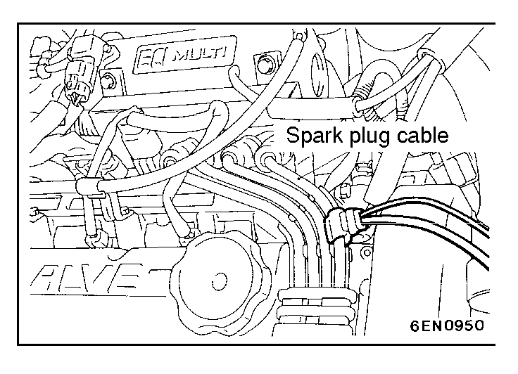

![[Previous]](https://mitsubishitechinfo.com/data/F24S/BUTTONS/fprevg.png)
![[Next]](https://mitsubishitechinfo.com/data/F24S/BUTTONS/fnextg.png)

IGNITION SECONDARY VOLTAGE WAVEFORM CHECK
MEASUREMENT METHOD
(1)Clamp the SECONDARY PICKUP around the spark plug cable.
NOTE
1.The peak ignition voltage will be reversed when the spark cables No.2 and No.4, or No.1 and No.3 cylinders are clamped.
2.Because of the two-cylinder simultaneous ignition system, the waveforms for two cylinders in each group appear during wave form observation (No.1 cylinder - No.4 cylinder, No.2 cylinder - No.3 cylinder).
However, wave form observation is only applicable for the cylinder with the spark plug cable clamped by the secondary pickup.
(2)Clamp the spark plug cable with the Trigger pickup.
NOTE
1.Clamp the trigger pickup to the same spark plug cable clamped by the secondary pickup.
2.Identifying which cylinder waveform pattern is displayed can be difficult. For reference, remember that the wave form pattern of the cylinder attached to the secondary pickup will be displayed as stable.
STANDARD WAVEFORM
For standard waveform, refer to  .
.
WAVEFORM OBSERVATION POINTS
For waveform observation points, refer to  .
.
ABNORMAL WAVEFORMS EXAMPLES
For examples of abnormal waveforms, refer to  .
.